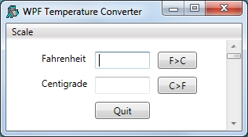
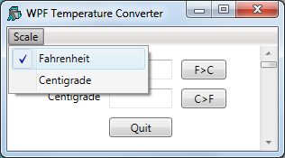

Temperature Converter Tutorial
This tutorial illustrates how to develop a simple WPF application in Dyalog. It is functionally identical to the GUI tutorial example that illustrates how to develop a GUI application using the built-in Dyalog APL Graphical User Interface provided in the Dyalog for Microsoft Windows Interface Guide.
The example is a simple Temperature Converter – a user can enter a temperature value in either Fahrenheit or Centigrade and have it converted to the other scale. This is an elementary example, but illustrates the principles that are involved. The example code is included in the [DYALOG]\ws\wpfintro.dws workspace.
No attempt has been made to update the WPF example, in terms of its user interface, from the original version which was developed for Windows 3. This allows a direct comparison to be made between using the WPF and using the built-in Dyalog GUI.
There are two versions provided:
-
Using XAML – uses XAML to describe the user interface with code to drive it
-
Using Code – written entirely in APL
Using XAML
The functions for this example are provided in the workspace WPFIntro.dws in the namespace WPF.UsingXAML.
To run the example:
)LOAD wpfintro
WPF.UsingXAML.TempConverterArguably, the easiest way to create a WPF GUI is to define it using XAML. The XAML defines the structure, layout and appearance of the user interface in a very concise manner. It is still necessary to write code to display the XAML and to respond to user actions, but the amount of code involved is minimal.
The XAML for the Temperature Converter is:
<Window
xmlns="http://schemas.microsoft.com/winfx/2006/xaml/presentation"
xmlns:x="http://schemas.microsoft.com/winfx/2006/xaml"
Name="Temp"
Title="WPF Temperature Converter"
SizeToContent="WidthandHeight">
<DockPanel LastChildFill="False">
<Menu DockPanel.Dock="Top">
<MenuItem Header="_Scale">
<MenuItem Name="mnuFahrenheit" Header="_Fahrenheit" IsCheckable="True" IsChecked="True"/>
<MenuItem Name="mnuCentigrade" Header="_Centigrade" IsCheckable="True"/>
</MenuItem>
</Menu>
<Grid Width="230" Margin="40,10,10,10">
<Grid.RowDefinitions>
<RowDefinition Height="Auto"/>
<RowDefinition Height="Auto"/>
<RowDefinition Height="Auto"/>
</Grid.RowDefinitions>
<Grid.ColumnDefinitions>
<ColumnDefinition Width="Auto"/>
<ColumnDefinition Width="80"/>
<ColumnDefinition Width="60"/>
</Grid.ColumnDefinitions>
<Label Grid.Row="0" Grid.Column="0" Content="Fahrenheit"/>
<Label Grid.Row="1" Grid.Column="0" Content="Centigrade"/>
<TextBox Name="txtFahrenheit" Grid.Row="0" Grid.Column="1" Margin="5"/>
<TextBox Name="txtCentigrade" Grid.Row="1" Grid.Column="1" Margin="5"/>
<Button Name="btnF2C" Grid.Row="0" Grid.Column="2" Content="F>C" Margin="5"/>
<Button Name="btnC2F" Grid.Row="1" Grid.Column="2" Content="C>F" Margin="5"/>
<Button Name="btnQuit" Grid.Row="2" Grid.Column="1" Content="Quit" Margin="5"/>
</Grid>
<ScrollBar Name="scrTemp" DockPanel.Dock="Right" Width="20" Orientation="Vertical" Minimum="1" Maximum="213">
</ScrollBar>
</DockPanel>
</Window>

The image above shows the window defined by this XAML. Let us examine the XAML, component by component.
Information
The XAML that defines this user interface is at the same time both simple and complex. It is simple because (in this example) it is readily understood. It is complex because the user interface designer must understand precisely how the various controls and their properties behave and work together. For these details, you should refer to the appropriate documentation and the large number of examples published on the internet.
Parent and Child Controls
The structure of the GUI is defined by enclosing the child components inside the opening and closing tags of its parent. Therefore:
<Window
...
<DockPanel>
...
</DockPanel>
</Window>
specifies a Window control that contains a DockPanel control.
Similarly:
<Menu>
<MenuItem ... >
<MenuItem ... />
<MenuItem ... />
</MenuItem>
</Menu>
defines a Menu that contains a MenuItem that itself contains two other MenuItem objects.
Named and Un-named Controls
Some objects are named, but others are not. For example: TextBox Name="txtFahrenheit" defines a TextBox called txtFahenheit; whereas <DockPanel ...> defines an unnamed DockPanel object.
Objects are given names so that they can be referenced from the code that displays content in the user interface or handles the user actions. In this example, the code will read the content of the txtFahrenheit TextBox but has no need to reference the DockPanel.
The Main Window
<Window
xmlns="http://schemas.microsoft.com/winfx/2006/xaml/presentation"
xmlns:x="http://schemas.microsoft.com/winfx/2006/xaml"
Name="Temp"
Title="WPF Temperature Converter"
SizeToContent="WidthandHeight">
...
</Window>This extract of XAML defines a Window control; a top-level window that is equivalent to a Dyalog APL GUI Form.
The xmlns attributes define the XML namespaces (effectively the vocabulary of the xml scheme) and are mandatory in an XAML document.
The name of the TextBox is Temp, and its caption is WFP Temperature Converter. The SizeToContent property is set to "WidthandHeight", which causes the TextBox to automatically size itself to fit its content in both horizontal and vertical directions.
The DockPanel
<DockPanel LastChildFill="False">
...
</DockPanel>WPF provides a number of layout controls. These are containers whose only purpose is to arrange child controls in a particular way, and to dictate how they are re-arranged when the parent window is resized. The DockPanel is one of the simplest of the WPF layout controls.
In this example, the DockPanel is controlling three child windows – a Menu, a Grid, and a ScrollBar.
The attachment of a particular child control is specified by setting its DockPanel.Dock property. By default, the last control added to a DockPanel is stretched to fill the remaining space when the window is expanded. In this example, the requirement is for a fixed-width scrollbar attached to the right edge, so the default is overridden by setting the LastChildFill property to "False".
The Menu
<Menu DockPanel.Dock="Top">
<MenuItem Header="_Scale">
<MenuItem Name="mnuFahrenheit" Header="_Fahrenheit" IsCheckable="True" IsChecked="True"/>
<MenuItem Name="mnuCentigrade" Header="_Centigrade" IsCheckable="True"/>
</MenuItem>
</Menu>
This XAML extract defines a Menu. Setting Dock to "Top" causes the Menu as a whole to be docked, so that it appears like a menubar along the top of the DockPanel. The Menu contains a single MenuItem labelled Scale, which itself contains two sub-items labelled Fahrenheit and Centigrade. The IsCheckable property specifies whether the user can check the MenuItem, and the IsChecked property sets and reports its checked state. The underscore characters (for example, as in "_Scale") identify the following character as a keyboard shortcut.
The Grid
<Grid Width="230" Margin="40,10,10,10">
...
</Grid>The Grid object is another WPF layout control that organises other controls in rows and columns. Here, the XAML defines a Grid with a width of 230, a left margin of 40, and top, right and bottom margins of 10. As there is no explicit unit specified, the system uses the default device-independent unit (px) of 1/96 inches.
The rows and columns of a Grid are defined by collections of RowDefinition and ColumnDefinition objects.
Here the XAML specifies that the Grid contains three rows, each of which has a Height set to "Auto", which means that its height depends upon the height of its content.
<Grid.RowDefinitions>
<RowDefinition Height="Auto"/>
<RowDefinition Height="Auto"/>
<RowDefinition Height="Auto"/>
</Grid.RowDefinitions> Similarly, there are three columns. The first column (which will contain labels) takes its width from its content, thatis, it will be just wide enough to display the longest label. The other columns for the edit boxes and buttons are specified to be 80px and 60px wide respectively. In this example, the content (TextBox and Button objects) will take their widths from that of the column:
<Grid.ColumnDefinitions>
<ColumnDefinition Width="Auto"/>
<ColumnDefinition Width="80"/>
<ColumnDefinition Width="60"/>
</Grid.ColumnDefinitions> The Label Objects (Column 1)
<Label Grid.Row="0" Grid.Column="0" Content="Fahrenheit"/>
<Label Grid.Row="1" Grid.Column="0" Content="Centigrade"/>Here the XAML specifies Label objects Fahrenheit and Centigrade. Because they are defined within the<Grid> ...</Grid> tags, they are child objects of the Grid. It is necessary to specify in which cells they are displayed using their Grid.Row and Grid.Column properties. Cell co‑ordinates have zero origin.
The TextBox Objects (Column 2)
<TextBox Name="txtFahrenheit" Grid.Row="0" Grid.Column="1" Margin="5"/>
<TextBox Name="txtCentigrade" Grid.Row="1" Grid.Column="1" Margin="5"/>
The XAML specifies two TextBox objects called txtFahrenheit and txtCentigrade respectively. Setting Margin to "5" means that a margin of 5px is applied around each edge; otherwise the text boxes would occupy the entire width of the column (80px). The effective width of each TextBox will be 70px (80-2×5).
The Button Objects (Column 3)
<Button Name="btnF2C" Grid.Row="0" Grid.Column="2" Content="F>C" Margin="5"/>
<Button Name="btnC2F" Grid.Row="1" Grid.Column="2" Content="C>F" Margin="5"/>
<Button Name="btnQuit" Grid.Row="2" Grid.Column="1" Content="Quit" Margin="5"/>The XAML specifies three named Button controls. The caption on a Button is specified by its Content property.
The ScrollBar Object
This example uses a ScrollBar that the user can use to scroll to input a value depending upon which of the two menu items (Fahrenheit or Centigrade) is checked. A ScrollBar is not the ideal choice of control for this type of user interation, but this example is designed to look and behave like the original Dyalog GUI example, which was written for the original version of Dyalog APL for Windows.
<ScrollBar Name="scrTemp" DockPanel.Dock="Right" Width="20" Orientation="Vertical" Minimum="1" Maximum="213">
</ScrollBar>This XAML snippet defines a ScrollBar called scrTemp.
Setting DockPanel.Dock to "Right" means that it will be docked (aligned) on the right edge of the DockPanel. It will be a vertical scrollbar with a fixed width of 20px and a default height. The range of the ScrollBar is defined by its Minimum and Maximum properties, which are set so that the ScrollBar will specify a value in Fahrenheit.
To cause the ScrollBar to be docked (aligned) along the right edge of the DockPanel, it is necessary to set LastChildFill to "False" (for the DockPanel) and Dock to "Right" (for the ScrollBar), because the value of LastChildFill (default "True") overrides the Dock value of the last defined child of the DockPanel.
The Code to Display the XAML
The function TempConverter contains the code needed to display and operate the user interface whose layout is defined by the XAML:
∇ TempConverter;str;xml;win;txtFahrenheit;txtCentigrade;mnuFahrenheit;mnuCentigrade;btnF2C;btnC2F;btnQuit;scrTemp;sink
[1] ⎕USING←'System'
[2] ⎕USING,←⊂'System.IO'
[3] ⎕USING,←⊂'System.Windows.Markup'
[4] ⎕USING,←⊂'System.Xml,system.xml.dll'
[5] ⎕USING,←⊂'System.Windows.Controls.Primitives,WPF/PresentationFramework.dll'
[6]
[7] str←⎕NEW StringReader(⊂XAML)
[8] xml←⎕NEW XmlTextReader str
[9] win←XamlReader.Load xml
[10]
[11] txtFahrenheit←win.FindName⊂'txtFahrenheit'
[12] txtCentigrade←win.FindName⊂'txtCentigrade'
[13] mnuFahrenheit←win.FindName⊂'mnuFahrenheit'
[14] mnuFahrenheit.onClick←'SET_F'
[15] mnuCentigrade←win.FindName⊂'mnuCentigrade'
[16] mnuCentigrade.onClick←'SET_C'
[17] (btnF2C←win.FindName⊂'btnF2C').onClick←'f2c'
[18] (btnC2F←win.FindName⊂'btnC2F').onClick←'c2f'
[19] (btnQuit←win.FindName⊂'btnQuit').onClick←'Quit'
[20] (scrTemp←win.FindName⊂'scrTemp').onScroll←'F2C'
[21] sink←win.ShowDialog
∇The variable XAML (a character vector) contains the XAML described previously.
Apart from the names given to the objects by the XAML and used by the function, the XAML and the code are independent.
Lines [7-8] create a XamlReader object from the character vector through StringReader and XmlTextReader objects:
[7] str←⎕NEW StringReader(⊂XAML)
[8] xml←⎕NEW XmlTextReader strLine [9] instantiates the XAML content by calling its Load method, which returns a reference win to the top-level control (in this case a Window) defined therein. The Window is not yet visible:
[9] win←XamlReader.Load xmlEarlier, it was explained that objects defined by the XAML must be named so that they can be referenced (used) by the code. This is achieved by calling the FindName method of the Window, which returns a reference to the specified (named) object. The statements:
[11] txtFahrenheit←win.FindName⊂'txtFahrenheit'
[12] txtCentigrade←win.FindName⊂'txtCentigrade'obtain refs (in this case named txtFahrenheit and txtCentigrade) to objects named txtFahrenheit and txtCentigrade. It is convenient (but not essential) to use the same name for the ref as is used for the control.
Most of the remaining statements obtain refs to the MenuItem, Button, and ScrollBar objects, and attach callback functions to their Click and Scroll events respectively:
[13] mnuFahrenheit←win.FindName⊂'mnuFahrenheit'
[14] mnuFahrenheit.onClick←'SET_F'
[15] mnuCentigrade←win.FindName⊂'mnuCentigrade'
[16] mnuCentigrade.onClick←'SET_C'
[17] (btnF2C←win.FindName⊂'btnF2C').onClick←'f2c'
[18] (btnC2F←win.FindName⊂'btnC2F').onClick←'c2f'
[19] (btnQuit←win.FindName⊂'btnQuit').onClick←'Quit'
[20] (scrTemp←win.FindName⊂'scrTemp').onScroll←'F2C'Finally the code displays the Window and hands it over to the user by calling the ShowDialog method of the top-level Window:
[21] sink←win.ShowDialogShowDialog displays the Window modally; that is, until it is closed the user can interact only with that Window. It is equivalent to ⎕DQ win or win.Wait in the Dyalog built-in GUI.
The Callback Functions
The callback functions are given the same names in this example as they are in the basic GUI tutorial in the Dyalog for Microsoft Windows Interface Guide, and are remarkably similar.
Callback function f2c, which is attached to the Click event of the btnF2C button (labelled F>C), reads the character string in the txtFahrenheit TextBox, converts it to a number using Text2Num, calculates the equivalent temperature in Centigrade, then displays the result in the txtCentigrade TextBox:
∇ f2c;value
[1] ⍝ Callback to convert Fahrenheit to Centigrade
[2] :If 1=⍴,value←Text2Num txtFahrenheit.Text
[3] txtCentigrade.Text←2⍕(value-32)×5÷9
[4] :Else
[5] txtCentigrade.Text←'invalid'
[6] :EndIf
∇
For completeness, the Text2Num function is shown below. If the user enters an invalid number, Text2Num returns an empty vector and the callback displays the text invalid instead:
∇ num←Text2Num txt;val
[1] val num←⎕VFI txt
[2] num←val/num
∇
The c2f function converts from Centigrade to Fahrenheit when the user presses the button labelled C>F:
∇ c2f;value
[1] ⍝ Callback to convert Centigrade to Fahrenheit
[2] :If 1=⍴,value←Text2Num txtCentigrade.Text
[3] txtFahrenheit.Text←2⍕32+value÷5÷9
[4] :Else
[5] txtFahrenheit.Text←'invalid'
[6] :EndIf
∇
The callbacks F2C and C2F, one of which at a time is attached to the Scroll event of the ScrollBar object are shown below. The argument Msg contains two items:
[1] |
Object | a ref to the ScrollBar object |
[2] |
Object | a ref to an object of type System.Windows.Controls.Primitives.ScrollEventArgs |
The code uses the NewValue property of the ScrollEventArgs object. An alternative would be to refer to the Value property of the ScrollBar object:
∇ F2C Msg;C;F;val
[1] ⍝ Callback for Fahrenheit input via scrollbar
[2] txtFahrenheit.Text←2⍕val←213-(2⊃Msg).NewValue
[3] txtCentigrade.Text←2⍕(val-32)×5÷9
∇
∇ C2F Msg;C;F;val
[1] ⍝ Callback for Centigrade input via scrollbar
[2] txtCentigrade.Text←2⍕val←101-(2⊃Msg).NewValue
[3] txtFahrenheit.Text←2⍕32+val÷5÷9
∇
The callbacks SET_F and SET_C, which are attached to the Click events of the two MenuItem objects, are:
∇ SET_F
[1] ⍝ Sets the scrollbar to work in Fahrenheit
[2] scrTemp.(Minimum Maximum)←1 213
[3] scrTemp.onScroll←'F2C'
[4] mnuFahrenheit.IsChecked←1
[5] mnuCentigrade.IsChecked←0
∇
∇ SET_C
[1] ⍝ Sets the scrollbar to work in Centigrade
[2] scrTemp.(Minimum Maximum)←1 101
[3] scrTemp.onScroll←'C2F'
[4] mnuCentigrade.IsChecked←1
[5] mnuFahrenheit.IsChecked←0
∇
Finally, the callback function Quit, which is attached to the Click event on the Quit button, calls the Close method of the window:
∇ Quit arg
[1] win.Close
∇
Unlike its equivalent in the Dyalog GUI, it is not appropriate to close the window using the expression ⎕EX 'win' – this would expunge the ref to the window but have no effect on the window itself.
Using Code
The functions for this example are provided in the workspace WPFIntro.dws in the namespace WPF.UsingCode.
To run the example:
)LOAD wpfintro
WPF.UsingCode.TempConverterThe function TempConverter performs the same task of defining and manipulating the user interface for the Temperature Converter as the XAML example. The callback functions it uses are identical.
∇ TempConverter;⎕USING;win;dp;mnu;mnuFahrenheit;mnuCentigrade;gr;tn;rd1;rd2;rd3;rc1;rc2;rc3;l1;l2;txtFahrenheit;txtCentigrade;btnF2C;btnC2F;btnQuit;sink;mnuScale;scrTemp
[1]
[2] ⎕USING←,⊂'System.Windows.Controls,WPF/PresentationFramework.dll'
[3] ⎕USING,←⊂'System.Windows.Controls.Primitives,WPF/PresentationFramework.dll'
[4] ⎕USING,←⊂'System.Windows,WPF/PresentationFramework.dll'
[5] ⎕USING,←⊂'System.Windows,WPF/PresentationCore.dll'
[6]
[7] win←⎕NEW Window
[8] win.SizeToContent←SizeToContent.WidthAndHeight
[9] win.Title←'WPF Temperature Converter'
[10]
[11] dp←⎕NEW DockPanel
[12] dp.LastChildFill←0
[13]
[14] mnu←⎕NEW Menu
[15]
[16] mnuScale←⎕NEW MenuItem
[17] mnuScale.Header←'_Scale'
[18] sink←mnu.Items.Add mnuScale
[19]
[20] mnuFahrenheit←⎕NEW MenuItem
[21] mnuFahrenheit.Header←'Fahrenheit'
[22] mnuFahrenheit.IsCheckable←1
[23] mnuFahrenheit.IsChecked←1
[24] mnuFahrenheit.onClick←'SET_F'
[25] sink←mnuScale.Items.Add mnuFahrenheit
[26]
[27] mnuCentigrade←⎕NEW MenuItem
[28] mnuCentigrade.Header←'_Centigrade'
[29] mnuCentigrade.IsCheckable←1
[30] mnuCentigrade.IsChecked←0
[31] mnuCentigrade.onClick←'SET_C'
[32] sink←mnuScale.Items.Add mnuCentigrade
[33]
[34] sink←dp.Children.Add mnu
[35] dp.SetDock mnu Dock.Top
[36]
[37] gr←⎕NEW Grid
[38] gr.Width←230
[39] gr.Margin←⎕NEW Thickness(40 10 10 10)
[40]
[41] rd1←⎕NEW RowDefinition
[42] rd1.Height←GridLength.Auto
[43] rd2←⎕NEW RowDefinition
[44] rd2.Height←GridLength.Auto
[45] rd3←⎕NEW RowDefinition
[46] rd3.Height←GridLength.Auto
[47] gr.RowDefinitions.Add¨rd1 rd2 rd3
[48]
[49] rc1←⎕NEW ColumnDefinition
[50] rc1.Width←GridLength.Auto
[51] rc2←⎕NEW ColumnDefinition
[52] rc2.Width←⎕NEW GridLength 80
[53] rc3←⎕NEW ColumnDefinition
[54] rc3.Width←⎕NEW GridLength 60
[55] gr.ColumnDefinitions.Add¨rc1 rc2 rc3
[56]
[57] l1←⎕NEW Label
[58] l1.Content←'Fahrenheit'
[59] sink←gr.Children.Add l1
[60] gr.SetRow l1 0
[61] gr.SetColumn l1 0
[62]
[63] l2←⎕NEW Label
[64] l2.Content←'Centigrade'
[65] sink←gr.Children.Add l2
[66] gr.SetRow l2 1
[67] gr.SetColumn l2 0
[68]
[69] txtFahrenheit←⎕NEW TextBox
[70] txtFahrenheit.Margin←⎕NEW Thickness 5
[71] sink←gr.Children.Add txtFahrenheit
[72] gr.SetRow txtFahrenheit 0
[73] gr.SetColumn txtFahrenheit 1
[74]
[75] txtCentigrade←⎕NEW TextBox
[76] txtCentigrade.Margin←⎕NEW Thickness 5
[77] sink←gr.Children.Add txtCentigrade
[78] gr.SetRow txtCentigrade 1
[79] gr.SetColumn txtCentigrade 1
[80]
[81] btnF2C←⎕NEW Button
[82] btnF2C.Content←'F>C'
[83] btnF2C.Margin←⎕NEW Thickness 5
[84] btnF2C.onClick←'f2c'
[85] sink←gr.Children.Add btnF2C
[86] gr.SetRow btnF2C 0
[87] gr.SetColumn btnF2C 2
[88]
[89] btnC2F←⎕NEW Button
[90] btnC2F.Content←'C>F'
[91] btnC2F.Margin←⎕NEW Thickness 5
[92] btnC2F.onClick←'c2f'
[93] sink←gr.Children.Add btnC2F
[94] gr.SetRow btnC2F 1
[95] gr.SetColumn btnC2F 2
[96]
[97] btnQuit←⎕NEW Button
[98] btnQuit.Content←'Quit'
[99] btnQuit.Margin←⎕NEW Thickness 5
[100] btnQuit.onClick←'Quit'
[101] sink←gr.Children.Add btnQuit
[102] gr.SetRow btnQuit 2
[103] gr.SetColumn btnQuit 1
[104]
[105] sink←dp.Children.Add gr
[106]
[107] scrTemp←⎕NEW ScrollBar
[108] scrTemp.Width←20
[109] scrTemp.Orientation←Orientation.Vertical
[110] scrTemp.Minimum←1
[111] scrTemp.Maximum←213
[112] scrTemp.onScroll←'F2C'
[113]
[114] sink←dp.Children.Add scrTemp
[115] dp.SetDock scrTemp Dock.Right
[116]
[117] win.Content←dp
[118]
[119] sink←win.ShowDialog
∇Although this approach appears to be more verbose than when using XAML (a 120‑line function compared with a 21-line function and a 44-line block of XAML), each line of code performs only one very simple task, and no attempt has been made to write utility functions to perform the same task for similar controls, as might be done in a real application.
This code can be examined line-by-line.
Lines [2 5] define ⎕USING so that the appropriate .NET assemblies are on the search-path. The ScrollBar control is in System.Windows.Controls.Primitives and not System.Windows.Controls like the others.
[2] ⎕USING←,⊂'System.Windows.Controls,WPF/PresentationFramework.dll'
[3] ⎕USING,←⊂'System.Windows.Controls.Primitives,WPF/PresentationFramework.dll'
[4] ⎕USING,←⊂'System.Windows,WPF/PresentationFramework.dll'
[5] ⎕USING,←⊂'System.Windows,WPF/PresentationCore.dll'Lines [7-9] create a Window and sets its SizeToContent and Title properties as in the XAML example. However, whereas with XAML the string SizeToContent="WidthandHeight" is sufficient, when using code it is necessary to get the Type correct. In this example, the SizeToContent property must be set to a specific member (WidthAndHeight) of the System.Windows.SizeToContent enumeration. Other members of this Type are Width, Height, and Manual (the default).
[7] win←⎕NEW Window
[8] win.SizeToContent←SizeToContent.WidthAndHeight
[9] win.Title←'WPF Temperature Converter'Lines [11-12] create a DockPanel control and set its LastChildFill property to 0. The APL value 0 is used instead of the string "False" that was used in XAML:
[11] dp←⎕NEW DockPanel
[12] dp.LastChildFill←0Line [14] creates a Menu control:
[14] mnu←⎕NEW MenuLines [16-18] create a MenuItem control with the caption Scale, and then add the control to the Items collection of the main Menu using its Add method. This illustrates one significant difference between using XAML and code. In XAML, the parent/child relationships between controls are defined by the structure and order of the XML. Using code, child controls must be explicitly added to the appropriate list of child controls managed by the parent:
[16] mnuScale←⎕NEW MenuItem
[17] mnuScale.Header←'_Scale'
[18] sink←mnu.Items.Add mnuScaleLines [20-25] create a MenuItem control labelled Fahrenheit. The IsCheckable and IsChecked properties are set to 1, which is equivalent to "True" in XAML. The callback function SET_F is assigned to the Click event, exactly as in the XAML version of this example. The last line in this section makes the Fahrenheit MenuItem a child of the Scale MenuItem:
[20] mnuFahrenheit←⎕NEW MenuItem
[21] mnuFahrenheit.Header←'Fahrenheit'
[22] mnuFahrenheit.IsCheckable←1
[23] mnuFahrenheit.IsChecked←1
[24] mnuFahrenheit.onClick←'SET_F'
[25] sink←mnuScale.Items.Add mnuFahrenheitThe code used to create the Centigrade MenuItem is very similar.
Lines [34-35] add the top-level menu to the DockPanel. For a DockPanel, the list of its child controls is represented by its Children property. Defining how it is docked is done using code, by the SetDock method of the DockPanel. This contrasts with the way this is achieved using XAML (DockPanel.Dock="Top"). The argument to SetDock is not just a simple string as in XAML, but a member of the System.Windows.Controls.Dock enumeration:
[34] sink←dp.Children.Add mnu
[35] dp.SetDock mnu Dock.TopLines [37-39] create the Grid control. Its Width property will accept a simple numeric value, but its Margin property must be given an instance of a System.Windows.Thickness structure. In this case, the Thickness constructor is given a 4-element numeric vector that specifies its Left, Top, Right and Bottom members respectively:
[37] gr←⎕NEW Grid
[38] gr.Width←230
[39] gr.Margin←⎕NEW Thickness(40 10 10 10)Lines [41-47] create instances of 3 RowDefinition classes and add them to the RowDefinitions collection of the Grid. In XAML, the Height can be specified as a string; using code it is necessary to use the correct Type. In this example, Height must be specified by a member of the System.Windows.GridLengthstructure:
[41] rd1←⎕NEW RowDefinition
[42] rd1.Height←GridLength.Auto
[43] rd2←⎕NEW RowDefinition
[44] rd2.Height←GridLength.Auto
[45] rd3←⎕NEW RowDefinition
[46] rd3.Height←GridLength.Auto
[47] gr.RowDefinitions.Add¨rd1 rd2 rd3Similarly, lines [49-55] create instances of 3 ColumnDefinition classes and add them to the ColumnDefinitions collection of the Grid. The Width property will not accept a simple numeric value, it must be a member of the GridLength structure. To set the Width to 80, it is necessary first to create an instance of a GridLength structure, giving this value as the argument to its constructor:
[49] rc1←⎕NEW ColumnDefinition
[50] rc1.Width←GridLength.Auto
[51] rc2←⎕NEW ColumnDefinition
[52] rc2.Width←⎕NEW GridLength 80
[53] rc3←⎕NEW ColumnDefinition
[54] rc3.Width←⎕NEW GridLength 60
[55] gr.ColumnDefinitions.Add¨rc1 rc2 rc3Lines [57-61] create a Label control with the caption Fahrenheit. To display the Label in a Grid it is necessary to first add it to the Children collection of the Grid, and then set its position in the Grid using its SetRow and SetColumn methods. Similar code is used to create and position the second Label:
[57] l1←⎕NEW Label
[58] l1.Content←'Fahrenheit'
[59] sink←gr.Children.Add l1
[60] gr.SetRow l1 0
[61] gr.SetColumn l1 0Lines [69-73] create and position a TextBox control, in the same way as the Label controls. In this case, the constructor for the Thickness structure is given a single value that specifies all four of its Left, Top, Right and Bottom members:
[69] txtFahrenheit←⎕NEW TextBox
[70] txtFahrenheit.Margin←⎕NEW Thickness 5
[71] sink←gr.Children.Add txtFahrenheit
[72] gr.SetRow txtFahrenheit 0
[73] gr.SetColumn txtFahrenheit 1Lines [81-87] create and position a Button control. The callback function f2c is attached to the Click event in the same way as in the XAML version of this example:
[81] btnF2C←⎕NEW Button
[82] btnF2C.Content←'F>C'
[83] btnF2C.Margin←⎕NEW Thickness 5
[84] btnF2C.onClick←'f2c'
[85] sink←gr.Children.Add btnF2C
[86] gr.SetRow btnF2C 0
[87] gr.SetColumn btnF2C 2Line [105] adds the Grid to the list of Children to be managed by the DockControl:
[105] sink←dp.Children.Add grLines [107-112] create a ScrollBar control. Its Width, Minimum, and Maximum properties all accept simple numeric values. However, its Orientation property must be set to a member of the System.Windows.Controls.Orientation enumeration:
[107] scrTemp←⎕NEW ScrollBar
[108] scrTemp.Width←20
[109] scrTemp.Orientation←Orientation.Vertical
[110] scrTemp.Minimum←1
[111] scrTemp.Maximum←213
[112] scrTemp.onScroll←'F2C'Lines [114-115] add the ScrollBar to the list of Children managed by the DockPanel, and use its SetDock method to cause it to be right-aligned:
[114] sink←dp.Children.Add scrTemp
[115] dp.SetDock scrTemp Dock.RightFinally, the DockPanel is assigned to the Content property of the Window, and the Window displayed. A Window can contain just one control:
[117] win.Content←dp
[118]
[119] sink←win.ShowDialog